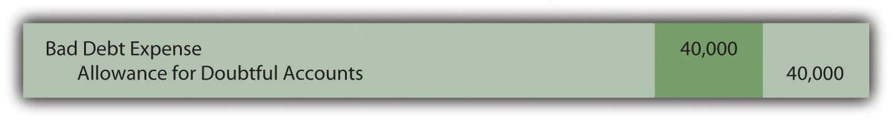
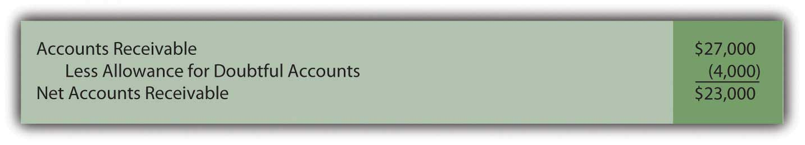
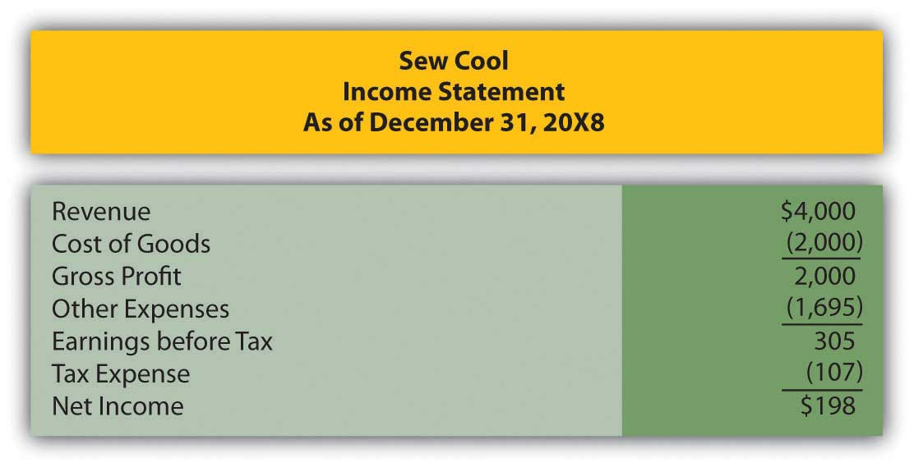
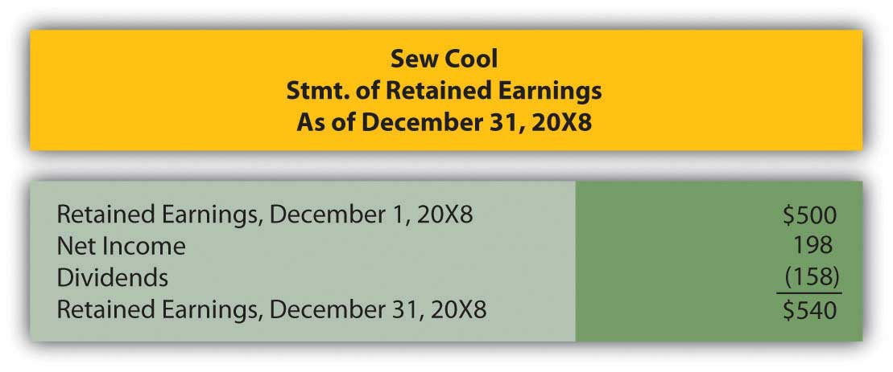
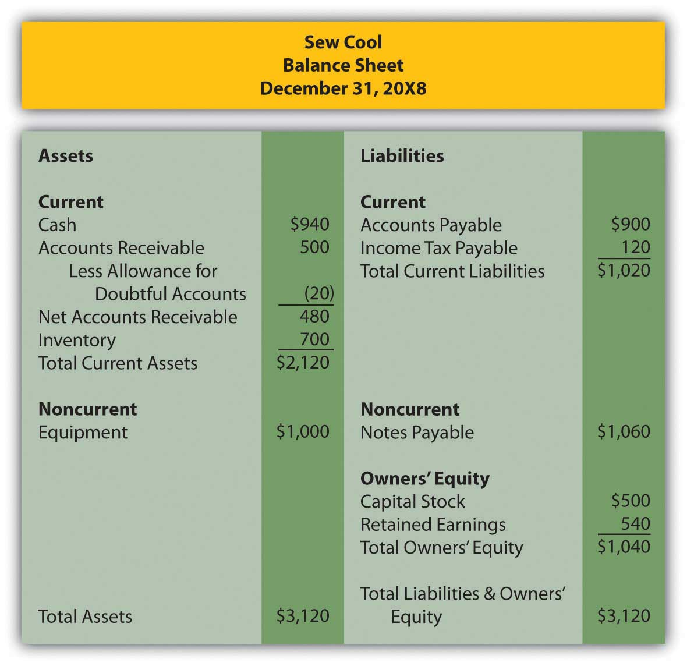
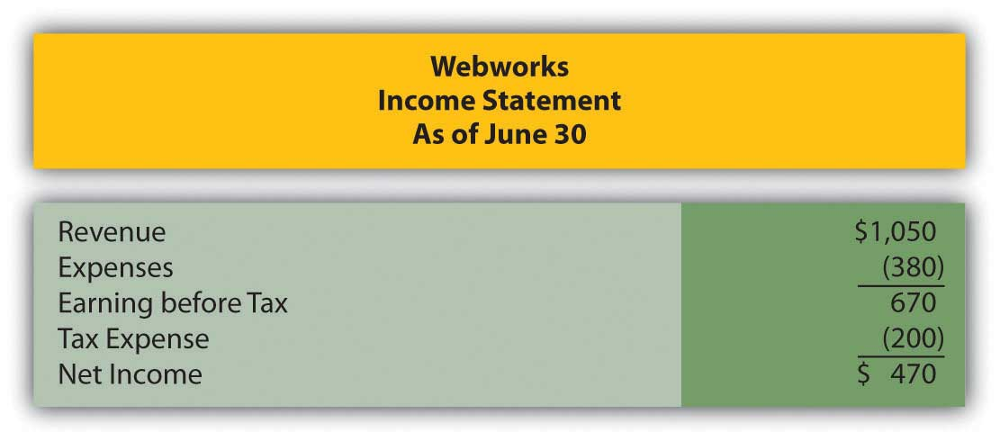
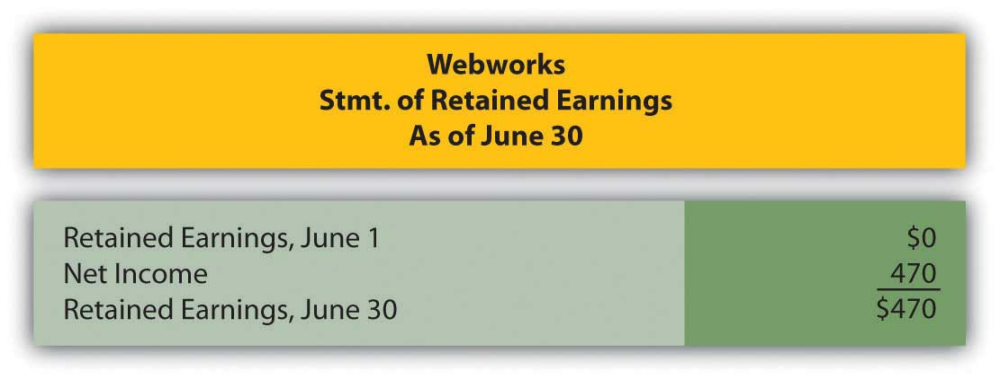
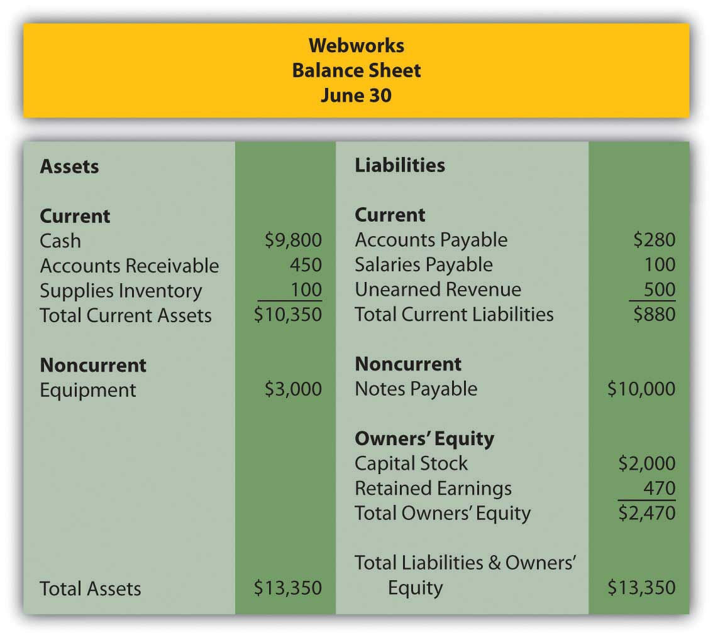

Which of the following would not be used to help a company determine the net realizable value of its accounts receivable?
Which principle states that expenses should be recorded in the period in which they help generate revenues?
SunFun Company manufactures lawn furniture that is sold to retailers like big box home improvement stores. During October 20X1, SunFun sold furniture to Home Place on account in the amount of $40,000. At the end of 20X1, the balance was still outstanding. In January 20X2, SunFun decided to write off this particular account as it did not appear the balance would ever be collected. Choose the correct journal entry for this transaction below.
Figure 7.16
Figure 7.17
Figure 7.18
Figure 7.19
Ornate Inc. ended 20X3 with $400 in allowance for bad debts. In 20X4, Ornate wrote off $360 in accounts receivable that appear to be uncollectible. At the end of 20X4, Ornate recorded bad debt expense of $330. What is the balance in the allowance for doubtful accounts at the end of 20X4?
Gladson Corporation accrues bad debt expense using the percentage of sales method. At the end of the year, Gladson has $450,000 in accounts receivable and $4,000 in its allowance for doubtful accounts before any entry is made for bad debts. Sales for the year were $1,900,000. The percentage that Gladson has historically used to calculate bad debts is 1 percent of sales. Which of the following is true?
Darlene Corporation has $300,000 in assets, 30 percent of which are current, and $100,000 in liabilities, 40 percent of which are current. Which of the following is true?
Fifer Inc. began the year with $450,000 in accounts receivable, ended the year with $590,000 in accounts receivable, and $4,000,000 in sales. Last year Fifer’s age of receivables was forty-six days and its receivables turnover was six times. Which of the following is not true?
Nuance Company had net credit sales for the year of $500,000. Nuance estimates that 2 percent of its net credit sales will never be collected.
Assume that Nuance in number 1 above used the percentage of receivables method to estimate uncollectible accounts instead of the percentage of sales method. Nuance assumes that 5 percent of accounts receivable will never be collected.
Ray’s GamePlace sells all the hottest gear and video games. On January 1, 20X7, Ray’s had the following account balances:
Figure 7.20
Medwear Corporation is a multinational dealer of uniforms for medical personnel. Medwear is headquartered in a country where dollars are the currency. On March 17, Medwear enters into a transaction to sell uniforms to a hospital in Brussels, Belgium in the amount of 267,000 euros. On this date, the exchange rate was $1.32 for every euro.
In Chapter 4 "How Does an Organization Accumulate and Organize the Information Necessary to Prepare Financial Statements? ", Heather Miller started her own business, Sew Cool. The financial statements for December are shown below.
Figure 7.21
Figure 7.22
Figure 7.23
Based on the financial statements, determine the following:
This problem will carry through several chapters, building in difficulty. It allows students to continuously practice skills and knowledge learned in previous chapters.
Recall in Chapter 5 "Why Must Financial Information Be Adjusted Prior to the Production of Financial Statements?" that Leon Jackson started Webworks, a Web site design and maintenance firm. You helped him prepare his adjusted trial balance for June. We are going to continue with this problem, preparing Webworks financial statements for July.
Here are Webworks financial statements as of June 30.
Figure 7.24
Figure 7.25
Figure 7.26
The following events occur during July:
a. Webworks purchases additional equipment for $4,000 cash.
b. Webworks purchases supplies worth $90 on account.
c. Webworks pays off its accounts payable and salaries payable from June.
d. Webworks starts and completes four more Web sites and bills clients for $1,800.
e. Recall that in June, Webworks received $500 in advance to design a restaurant Web site. Webworks completes this site during July.
f. Webworks collects $1,200 in accounts receivable.
g. Webworks pays Nancy $500 for her work during the first three weeks of July.
h. Webworks receives $200 in advance to work on a Web site for a local dry cleaner and $300 in advance to work on a Web site for a local vet. Work will not begin on the Web sites until August.
i. Leon’s parents have decided to charge rent after seeing how successful his business is and how much space it is taking up in their house. They all agree that rent will be $200 per month. Webworks pays $600 for July, August, and September.
j. Webworks pays taxes of $300 in cash.
Required:
A. Prepare journal entries for the above events.
B. Post the journal entries to T-accounts.
C. Prepare an unadjusted trial balance for Webworks for July.
D. Prepare adjusting entries for the following and post them to your T-accounts.
k. Webworks owes Nancy $200 for her work during the last week of July.
l. Leon’s parents let him know that Webworks owes $150 toward the electricity bill. Webworks will pay them in August.
m. Webworks determines that it has $50 worth of supplies remaining at the end of July.
n. Prepaid rent should be adjusted for July’s portion.
o. In June, Webworks designed a site for Pauline Smith, but has not yet been fully paid. Leon believes the company may not be able to collect all of its accounts receivable. A local CPA helps Leon determine that similar businesses report an allowance for bad debt at an average of 10 percent of their accounts receivable. Webworks will use this method. Make the bad debt accrual for Webworks.
E. Prepare an adjusted trial balance.
F. Prepare financial statements for July.